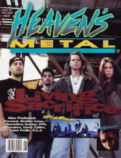

CMnexus
: Contemporary Christian culture, music, and media.
|
|
Heaven's Metal, May / Jun 1994, #47
| Cover |
|---|
|  | | Writers in this Issue |
|---|
Bach, David
Beeman, Bob
Crump, Andrew
Gustafsson, Staffan
Jenison, David A.
Kaiser, Wendi
Lott, Jeff
MacIntosh, Dan
Patti, Stuart
Scheetz, Jeff
Van Pelt, Doug
Wilson, Jerry
|
Cover Feature:
- "Back For More" by Doug Van Pelt
Article:
- "Rose: Getting Back To Where He Belongs" by Jerry Wilson
- "The Vision of 20/20 Blind" by Doug Van Pelt
- "Only Bowing To One" by David A. Jenison
- "Casting The First Stone" by Andrew Crump
- "Dogs Having Their Day" by Dan MacIntosh
- "Prophets Don't Mean Profits" by Staffan Gustafsson
- "Soloing In Nashville" by Stuart Patti
- "Label Profile: R.E.X." by Andrew Crump
What ... Sez:Album Review:Pastor Bob: "Where is Sanctuary?" by Pastor Bob
Inside / Outside by David Bach
Ask Wendi... by Wendi Kaiser
Poster:Licks & Tricks by Jeff Scheetz
HM Back Page: "Worship At Full Volume"
|
|